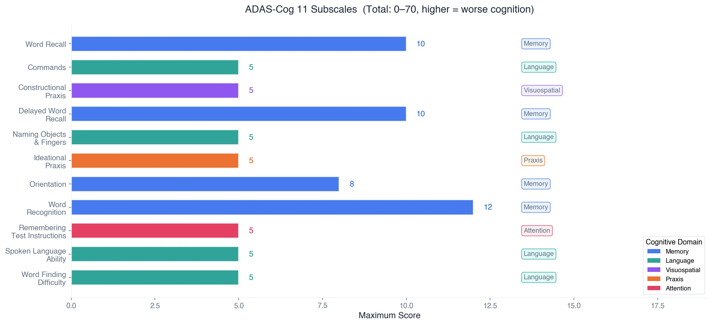
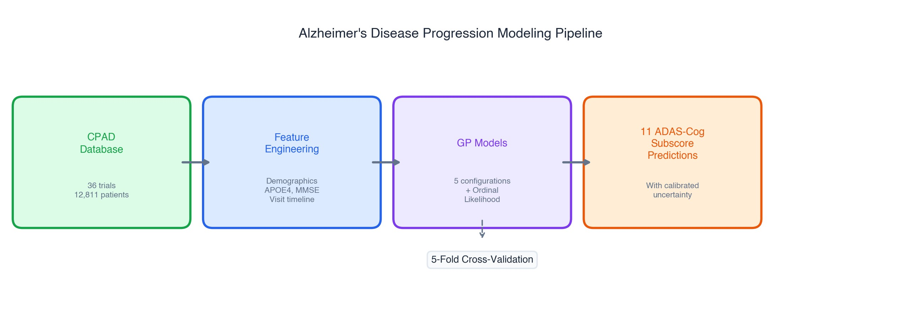
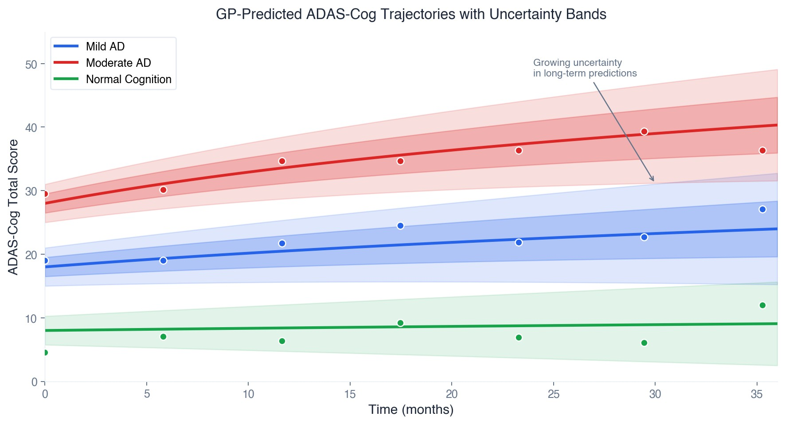

Why predict individual subscores?
Most Alzheimer's models focus on the total ADAS-Cog score (0–70), which sums across all cognitive domains. But this total hides important patterns. One patient might be losing language skills rapidly while memory stays relatively intact; another might show the opposite trajectory. Predicting all 11 subscores individually lets us:
- Spot which cognitive domains are declining fastest for a given patient, so interventions can be targeted accordingly
- Detect early signs that a treatment is helping one aspect of cognition even if the total score hasn't moved much
- Design smarter clinical trials by enriching for patients whose specific decline patterns match the drug's mechanism
How we approached it
Each ADAS-Cog subscore is an ordered integer. For example, a Word Recall score of 5 is meaningfully "between" 4 and 6, not just a category label. A standard Gaussian likelihood ignores this structure and can produce predictions like 4.7 that don't correspond to any real score. So we used an ordinal likelihood that maps the latent GP function through learned thresholds to produce proper probability distributions over each discrete score level.
We compared five GP configurations, from a continuous-response baseline to a full variational GP with ordinal likelihood, using 5-fold cross-validation to see which setup gives the best predictions with well-calibrated uncertainty bands.
ADAS-Cog 11 Subscales

Modeling Pipeline


Ordinal Likelihood
Why ordinal matters
ADAS-Cog subscores are ordered integers (e.g., Word Recall: 0-10). Treating them as continuous means a prediction of "4.7" has no clinical meaning. The ordinal likelihood maps the GP's latent function through ordered thresholds \(\tau_k\) to produce proper probabilities for each score level:
where \(\tau_0 = -\infty\), \(\tau_K = +\infty\), the interior thresholds \(\tau_1 < \cdots < \tau_{K-1}\) are learned, and \(g = \Phi\) is the standard normal CDF (probit link).
What this gives us
The ordinal model naturally captures something intuitive: if the true score is 5, the model should be more likely to guess 4 or 6 than 0 or 10. This "nearness-aware" structure produces clinically meaningful uncertainty estimates. A wide band between 4 and 7 means something very different from a wide band between 1 and 10.
Combined with the GP's flexible longitudinal modeling, this gives us patient-specific progression curves with properly calibrated confidence intervals, which is what clinical trial planners need for power calculations and what physicians need for treatment conversations.